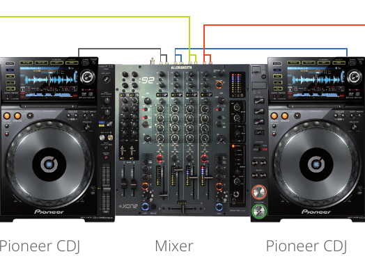
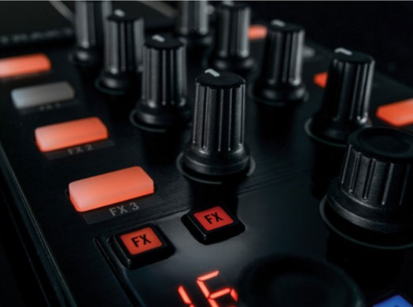

CONFIGURACIÓN DE CABINA
2 CDJ + mixer
Dos reproductores CDJ y un mixer DJ profesional, instalados y conectados al sistema de sonido del venue.
DJ · TECHNO · TECH HOUSE
Press kit · Colombia
Conoce al artista01 / BIO
ARTISTA
DJ · Productor · Colombia
Victor Arias es DJ y productor colombiano de techno y tech house. En el año de 1998 inicia realizando toques en clubs del país motivado por el gran sonido de los vinilos. A los dieciséis años comienza a producir música electrónica.
En la búsqueda de difundir e impulsar la escena electrónica, hizo parte de emisoras como la Súper Estación (100.5 - Cali), Radio Planeta (96.9 - Cali) y La X (96.5 – Cali). También fue el director de la primera emisora electrónica Online Caleña, CTK Radio. Actualmente cuenta con más de 30 lanzamientos discográficos con los sellos: Orunmila (Cali, Colombia), Malicious Smile (Medellín Col), Klam Records (Cali, Colombia) , Take More Music Records (Kosovo, Albania), entre otros.
Cofundador y promotor de empresas de eventos realizando raves con artistas internacionales como Kaiserdisco (Alemania), Satoshi Tomiie (Japón), Gary Beck (Escocia), Nick Bowman (Inglaterra), y Markantonio (Italia). Ha compartido escenario con djs como: Gary Beck, Xpansul, Flavio Diaz, Markantonio, Ramon Tapia, Loko, Kaiserdisco, Elton D, Andrea Roma, Joeski, Mario Piu, Joy Kitikonti, Danilo Vigorito, entre otros.
02 / MÚSICA
Escucha cada set en su página, con el reproductor completo.
03 / MEDIA
Descargas de alta resolución para difusión y promoción.
04 / RIDER
Configuraciones preferidas para la presentación. Coordinar previamente cualquier cambio.

Dos reproductores CDJ y un mixer DJ profesional, instalados y conectados al sistema de sonido del venue.

Portátil, controlador Native Instruments X1 y mixer. Requiere espacio de montaje y conexión de audio en cabina.
HOSPITALITY RIDER
Los requerimientos de viaje, hospedaje y camerino se acuerdan entre el contratante y el artista.
05 / CONTACTO
Para contratación, fechas y consultas profesionales.